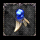

系統說明
聖物系統為召喚後能力生效，升階後的屬性召喚即生效。
依職業取向分為三大系列：近戰、遠程、法師，每系列共七個升階階段，逐步強化核心數值。
依職業取向分為三大系列：近戰、遠程、法師，每系列共七個升階階段，逐步強化核心數值。
強化說明
- 強化道具：聖物成長藥劑（掉落於傲慢之塔 1–10F）
- 強化費用：每次嘗試消耗 10,000 天幣
- 失敗懲罰：失敗不退階，僅消耗道具與天幣，等級不下降
- 擴充說明：需使用聖物擴充石，才可讓聖物與魔法娃娃共存於裝備欄
三大系列升階表
近戰系聖物
| 聖物名稱 | 屬性加成 | 特殊效果 | 成功率 |
|---|---|---|---|
| 甘地的圖騰 | HP+10、經驗+5% | — | — |
| 平凡的聖物：食人妖精的棍棒 | HP+20、經驗+10% | — | 25% |
| 努力的聖物：暗黑騎士的單手劍 | HP+40、經驗+15% | — | 15% |
| 聰明的聖物：歐吉王的斧頭 | HP+60、經驗+20% | 額外攻擊+1 | 10% |
| 聰穎的聖物：史雷佛雙刀 | HP+80、經驗+25% | 額外攻擊+2、額外命中+1 自動施放通暢與體魄 |
6% |
| 發光的聖物：勞待碼依之劍 | HP+120、經驗+35% | 額外攻擊+3、額外命中+2 自動施放通暢與體魄 |
3% |
| 光彩照人的聖物：格蘭肯的現身 | HP+150、經驗+50% | 額外攻擊+5、額外命中+3 自動施放通暢與體魄 |
1% |
遠程系聖物
| 聖物名稱 | 屬性加成 | 特殊效果 | 成功率 |
|---|---|---|---|
| 阿吐巴的圖騰 | HP+10、經驗+5% | — | — |
| 平凡的聖物：黑暗妖精的弓 | HP+20、經驗+10% | — | 25% |
| 努力的聖物：達伊思諾手套 | HP+40、經驗+15% | — | 15% |
| 聰明的聖物：安迪斯弩弓 | HP+60、經驗+20% | 遠距離額外攻擊+1 | 10% |
| 聰穎的聖物：海露拜之弓 | HP+80、經驗+25% | 遠距攻擊+2、遠距命中+1 自動施放通暢與體魄 |
6% |
| 發光的聖物：赫發斯特斯 | HP+120、經驗+35% | 遠距攻擊+3、遠距命中+2 自動施放通暢與體魄 |
3% |
| 光彩照人的聖物：殷海薩的現身 | HP+150、經驗+50% | 遠距攻擊+5、遠距命中+3 自動施放通暢與體魄 |
1% |

法師系聖物| 聖物名稱 | 屬性加成 | 特殊效果 | 成功率 |
|---|---|---|---|
| 那魯加的圖騰 | HP+10、經驗+5% | — | — |
| 平凡的聖物：長者的魔杖 | HP+20、經驗+10% | — | 25% |
| 努力的聖物：巫婆的掃帚 | HP+40、經驗+15% | — | 15% |
| 聰明的聖物：巴風特魔杖 | HP+60、經驗+20% | 魔攻+1 | 10% |
| 聰穎的聖物：冰之女王頭飾 | HP+80、經驗+25% | 魔攻+1、額外命中+1 自動施放通暢與體魄 |
6% |
| 發光的聖物：吉倫的魔杖 | HP+120、經驗+35% | 魔攻+2、額外命中+2 自動施放通暢與體魄 |
3% |
| 光彩照人的聖物：法老王的現身 | HP+150、經驗+50% | 魔攻+3、額外命中+3 自動施放通暢與體魄 |
1% |